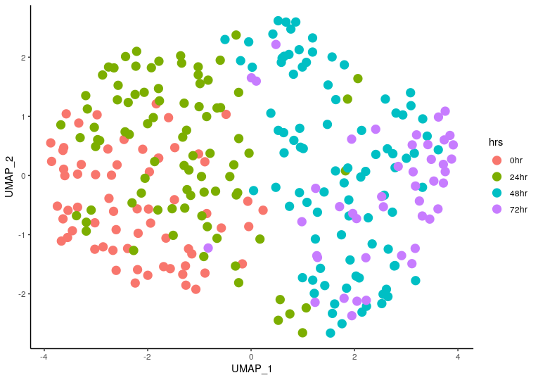
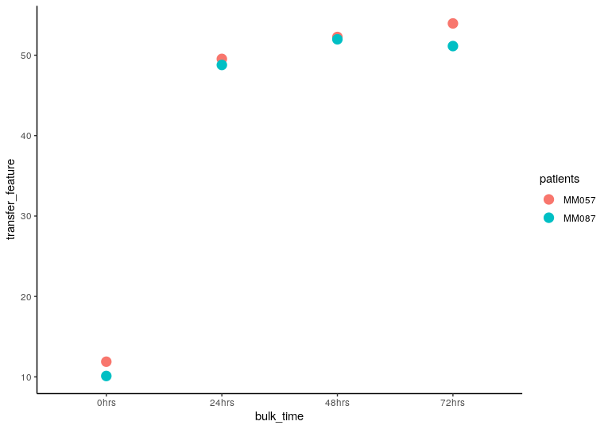

Chromatin accessibility data
a4_Chromatin_Accessibility_Data.RmdConDecon’s general approach for estimating cell abundances can be applied to other omics data modalities such as chromatin accessibility data. In this tutorial, we will apply ConDecon to bulk and single-cell ATAC-seq data from patient-derived melanoma cell cultures where the SOX10 transcription factor was knocked down by siRNA. Cells were then sampled for sequencing at 0, 24, 48, and 72 hours after SOX10 knockdown (Bravo González-Blas et al, Nature Methods, 2018). For convenience, the processed data associated with this tutorial is available on Zenodo.
Note: To apply ConDecon to chromatin accessibility data, the bulk and single-cell ATAC-seq data must contain a common set of peaks. We created this by binning the genome into non-overlapping 10KB bins and aggregating the peaks from the single-cell and bulk ATAC-seq data into those bins.
We will use single-cell ATAC-seq data from each of the four sampling times as a reference dataset.
snATAC_count <- readRDS("../snATAC_count.Rds")
snATAC_SVD <- readRDS("../snATAC_SVD.Rds")
snATAC_var_genes <- readRDS("../snATAC_var_genes.Rds")
snATAC_meta_data <- readRDS("../snATAC_meta_data.Rds")
# Visualize the sampling time of the single-cell ATAC-seq data
ggplot(snATAC_meta_data, aes(x = UMAP_1, y = UMAP_2, color = hrs)) +
geom_point(size = 3) +
theme_classic()
We are interested in using ConDecon to deconvolve 8 bulk ATAC-seq samples from 2 different patients (MM087 and MM057) and each of the four sampling times.
BulkATAC_data <- readRDS("../BulkATAC_data.Rds")
BulkATAC_meta_data <- readRDS("../BulkATAC_meta_data.Rds")We can now use ‘RunConDecon’ to deconvolve bulk ATAC-seq data using single-cell ATAC-seq data as reference.
startTime <- Sys.time()
ConDecon_obj = RunConDecon(counts = snATAC_count,
latent = snATAC_SVD[,2:20],
bulk = BulkATAC_data,
variable.features = snATAC_var_genes)
endTime <- Sys.time()
print(endTime - startTime)
#Time difference of 1.620496 minsWith ‘PlotConDecon’, we can visualize the relative cell probabilities of each bulk sample. We find that ConDecon infers a higher abundance of reference cells from the same sampling time as the query bulk sample, independently of the specific patient cell line of the query sample.
# Let's visualize the cell abundance distribution of all 8 bulk samples
PlotConDecon(ConDecon_obj = ConDecon_obj,
umap = snATAC_meta_data[, c("UMAP_1", "UMAP_2")],
pt.size = 3)
We can now use the cell probabilities inferred by ConDecon to deconvolve the sampling time of the bulk ATAC-seq data. Using ‘TransferFeatures’, we will estimate the sampling time of each bulk sample and compare these to the actual sampling time.
ConDecon_obj = TransferFeatures(ConDecon_obj = ConDecon_obj,
feature = snATAC_meta_data$time_hrs)
meta_data <- data.frame(bulk_time = BulkATAC_meta_data$hrs,
transfer_feature = ConDecon_obj$TransferFeatures[1,],
patients = BulkATAC_meta_data$patient)
ggplot(meta_data, aes(x = bulk_time, y = transfer_feature, color = patients)) +
geom_point(size = 3) +
theme_classic()